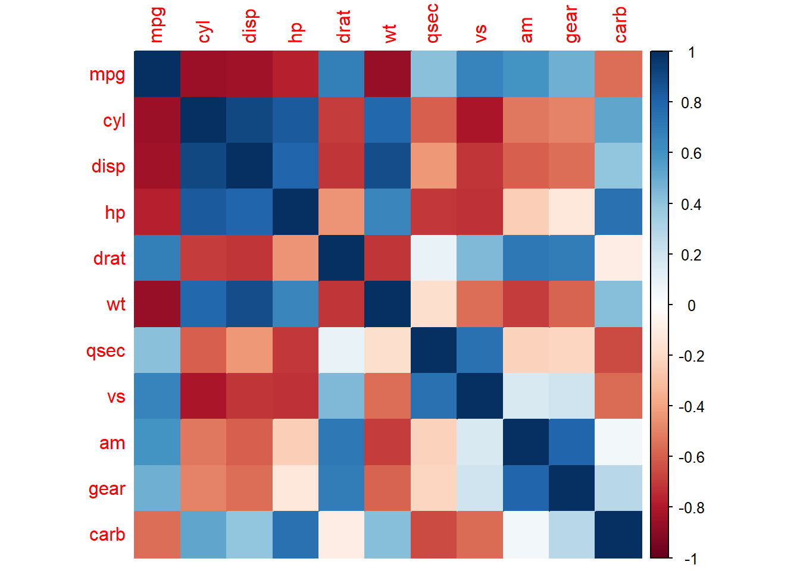

Here I will describe the basics of performing EDA in RStudio.
To began Exploratory Data Analysis (EDA) in R, we first must load in our dataset. RStudio comes equipped with several datasets; so to describe the EDA process in RStudio, I have decided to use the “mtcars” dataset. The “mtcars” dataset pulls information from the 1970 Motor Trend US magazine about various characteristics from car models of the time. Some packages that are helpful with the EDA process include “dplyr”, “ggplot2”, and “tidyr”.
# Deleting the "#" symbol and running the code will install the package automatically.#install.packages("dplyr")#install.packages("ggplot2")#install.packages("tidyr")library(dplyr)
Warning: package 'dplyr' was built under R version 4.3.2
Attaching package: 'dplyr'
The following objects are masked from 'package:stats':
filter, lag
The following objects are masked from 'package:base':
intersect, setdiff, setequal, union
library(ggplot2)
Warning: package 'ggplot2' was built under R version 4.3.2
library(tidyr)
Warning: package 'tidyr' was built under R version 4.3.2
data("mtcars")
To install the mentioned packages and load the “mtcars” dataset follow the code above; however,
Now to start exploring, it is good to look at the structure and the variables of the dataset
# Will print out the column names, our variables, of the datasetcolnames(mtcars)
# Will print out the summary statistics of the variables of the datasetsummary(mtcars)
mpg cyl disp hp
Min. :10.40 Min. :4.000 Min. : 71.1 Min. : 52.0
1st Qu.:15.43 1st Qu.:4.000 1st Qu.:120.8 1st Qu.: 96.5
Median :19.20 Median :6.000 Median :196.3 Median :123.0
Mean :20.09 Mean :6.188 Mean :230.7 Mean :146.7
3rd Qu.:22.80 3rd Qu.:8.000 3rd Qu.:326.0 3rd Qu.:180.0
Max. :33.90 Max. :8.000 Max. :472.0 Max. :335.0
drat wt qsec vs
Min. :2.760 Min. :1.513 Min. :14.50 Min. :0.0000
1st Qu.:3.080 1st Qu.:2.581 1st Qu.:16.89 1st Qu.:0.0000
Median :3.695 Median :3.325 Median :17.71 Median :0.0000
Mean :3.597 Mean :3.217 Mean :17.85 Mean :0.4375
3rd Qu.:3.920 3rd Qu.:3.610 3rd Qu.:18.90 3rd Qu.:1.0000
Max. :4.930 Max. :5.424 Max. :22.90 Max. :1.0000
am gear carb
Min. :0.0000 Min. :3.000 Min. :1.000
1st Qu.:0.0000 1st Qu.:3.000 1st Qu.:2.000
Median :0.0000 Median :4.000 Median :2.000
Mean :0.4062 Mean :3.688 Mean :2.812
3rd Qu.:1.0000 3rd Qu.:4.000 3rd Qu.:4.000
Max. :1.0000 Max. :5.000 Max. :8.000
To get a better visualization of the distribution of the data, we can create several different plots. For this application, box plots are great! They visualize the summary statistics listed in the code block above.
# Creates box plots for each variable in our datasetpar(mfrow =c(2, 6), mar =c(1, 1, 2, 1))for (i in1:ncol(mtcars)) {boxplot(mtcars[, i], main =names(mtcars)[i], col ="green", border ="black") }
Now that we know the name of our variables, an overview of the dataset, and distribution of the dataset, we can explore the relationship among the variables.
To find correlations/relationships, we must make sure that our dataset does not have any missing values.
# Will print the number of missing values in the datasetsum(is.na(mtcars))
[1] 0
In this dataset, we do not have any missing values which means we will be able to proceed without any additional steps. However, if the dataset was missing values, then data cleaning would be necessary. To handle missing values, excluding or imputing records with missing values would be necessary.
To create a correlation matrix, installing the “corrplot” package would be beneficial.
# Visualize the correlation matrix#install.packages("corrplot") <- remove the "#" symbol to have RStudio automatically install the "corrplot" packagelibrary(corrplot)
Warning: package 'corrplot' was built under R version 4.3.2
corrplot 0.92 loaded
correlation_matrix <-cor(mtcars)# Creates the correlation matrix with numerical values for the variablescorrelation_matrix <-cor(mtcars)# Prints our correlation matrixprint(correlation_matrix)
An alternative way to look at the correlation matrix is by adding color.
# Creates the correlation matrix but changes the numerical value of the correlation with a color# Red indicates a negative correlation# Blue indicates a positive correlationcorrplot(correlation_matrix, method ="color")

To expand upon the correlations between variables, if we wanted to focus on a single variable, like a target variable. For this example, I will be using “mpg” as the target variable.
# Find the variables with the highest absolute correlation with mpgmpg_correlation <- correlation_matrix["mpg", ]abs_correlation <-abs(mpg_correlation)# Sort in descending ordersorted_correlation <-sort(abs_correlation, decreasing =TRUE)# Print the variables and their absolute correlation with mpgprint(sorted_correlation)
mpg wt cyl disp hp drat vs am
1.0000000 0.8676594 0.8521620 0.8475514 0.7761684 0.6811719 0.6640389 0.5998324
carb gear qsec
0.5509251 0.4802848 0.4186840
As we can see, weight has the highest absolute correlation to mpg.
# Create a scatterplot between weight and mpgplot(mtcars$wt, mtcars$mpg, main ="Scatterplot of Weight vs. MPG",xlab ="Weight",ylab ="Miles per Gallon",col ="green",pch=19) #stylizes the data points on the graph# Adds the regression line which would inabline(lm(mpg ~ wt, data = mtcars), col ="black", lwd =2)
To find the equation for the black regression line in the scatterplot, use the code below.
# Fit a linear regression modellm_model <-lm(mpg ~ wt, data = mtcars)# Print the regression formulaprint(summary(lm_model))
Call:
lm(formula = mpg ~ wt, data = mtcars)
Residuals:
Min 1Q Median 3Q Max
-4.5432 -2.3647 -0.1252 1.4096 6.8727
Coefficients:
Estimate Std. Error t value Pr(>|t|)
(Intercept) 37.2851 1.8776 19.858 < 2e-16 ***
wt -5.3445 0.5591 -9.559 1.29e-10 ***
---
Signif. codes: 0 '***' 0.001 '**' 0.01 '*' 0.05 '.' 0.1 ' ' 1
Residual standard error: 3.046 on 30 degrees of freedom
Multiple R-squared: 0.7528, Adjusted R-squared: 0.7446
F-statistic: 91.38 on 1 and 30 DF, p-value: 1.294e-10
Based on the correlation taken from the matrix of -0.8676594 and this graph, we can see that there is a strong negative relationship between the two variables weight and mpg.
Additional EDA can be performed on this dataset but this should serve as a basic introduction on how to conduct EDA in RStudio.